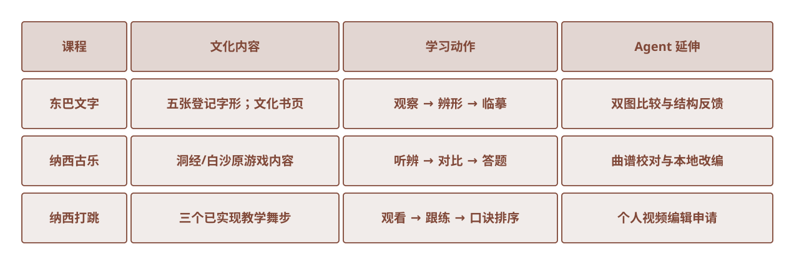

真实资料 / 待插入东巴文字游戏学习文化书 · 翻阅与辨形
东巴文字
文化书 · 翻阅与辨形
原 Godot 游戏已迁移为三个可游玩的 Web 章节：先以剧情进入情境，再翻阅文化书、完成辨形听辨或舞步练习，最后通关并衔接专业 Agent。下方均为现有页面实拍。
文化书 · 翻阅与辨形
视频听辨 · 答题反馈
完整演示 · 分步练习
原游戏剧情 → 文化书页 → 互动练习 → 通关反馈 → Agent 学习延伸

证据与状态 截图来自本地原生 Web 游戏：东巴文化书、古乐视频辨识、打跳完整演示。点击“课程对照图”可查看三门课的教学动作与 Agent 延伸。